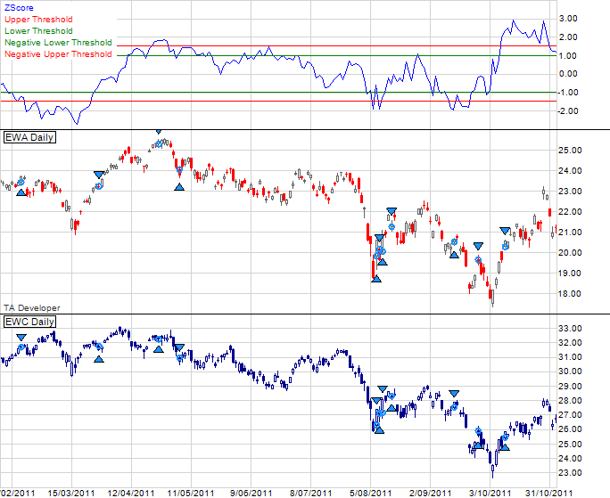
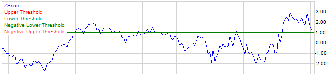
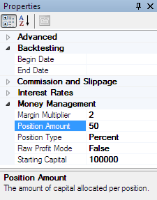
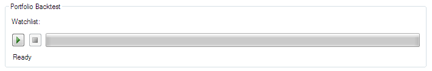
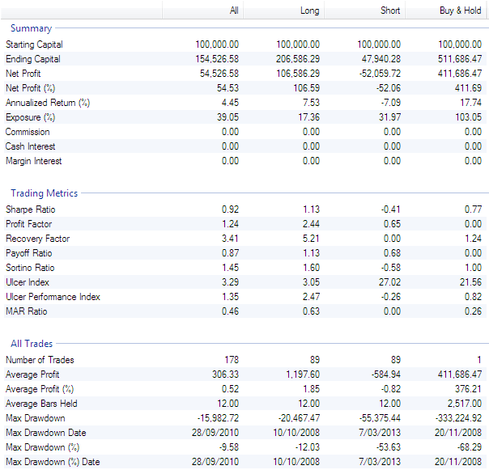
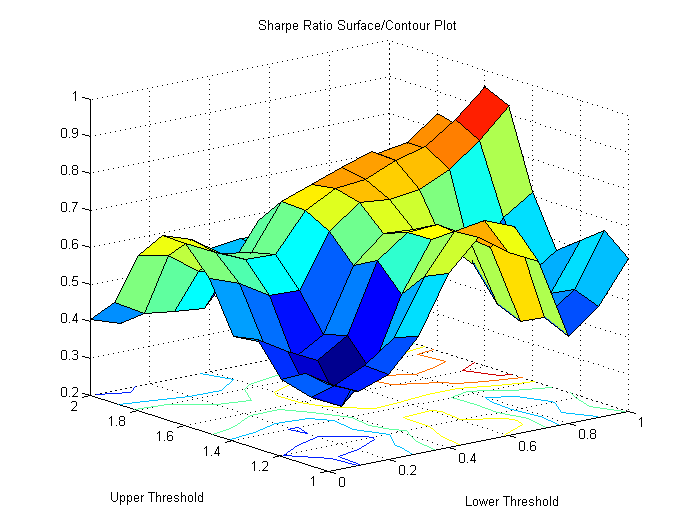

MATLAB pairs trading strategy
This demo uses MATLAB and the Technical Analysis (TA) Developer Toolbox to create and test a pairs trading strategy. The TA Developer toolbox complements the existing computational finance toolboxes by adding advanced backtesting functionalities like portfolio backtesting, calculation of standard trading metrics and an interactive graphical user interface that allows applying technical indicators via drap&drop.
Contents
- Example: Australia - Canada spread
- Downloading the data
- Creating a new strategy m-file
- Defining the primary and secondary symbols
- Trading parameters
- Calculating and plotting the ratio, average, standard deviation and z-score
- Primary entry and exit signals
- Secondary entry and exit signals
- Backtesting the strategy
- Performance evaluation
- Parameter sweep
Example: Australia - Canada spread
This first step in creating a pairs trading strategy is choosing two financial instruments that are historically correlated. The pairs trading strategy takes advantage of short term divergence by entering a short position in one instrument and a long position in the other. The strategy assumes that the pair will converge in the long term. By being short in one instrument and long in the correlated instrument this strategy is market neutral. For example if the stock market crashes profits from shorting one instrument should offset the losses from the long position. In this demo we use the fact that Australia and Canada are two resource-rich countries which have an economic and statistical correlation as explained here:
National Arbitrage Australia vs Canada

Downloading the data
For the pairs trading strategy we use the iShares MSCI Australia Index (EWA) as a proxy for the Australian economy and the iShares MSCI Canada Index (EWC) as a proxy for the Canadian economy. The data can be downloaded from Yahoo finance by using the getyahoo10.m script from the MATLAB file exchange. getyahoo10.m downloads 10 years of daily data from Yahoo finance and saves the downloaded files in the specified directory.
getyahoo10('EWA,EWC','C:\StockData');
The downloaded data can then be imported into the TA Developer Toolbox as described here:
Importing trading data into the TA Developer Toolbox
Creating a new strategy m-file
A trading strategy consists of a MATLAB function with a single parameter called sys. The sys parameter contains trading system data like the open, high, low and close prices of a stock or a future. We will add entry and exit trading rules to this trading strategy m-file. No additional writing of backtesting code is required. The backting and performance evaluation is all handled by the Technical Analysis (TA) Developer Toolbox. The empty trading strategy should look similar this and servers as a starting point for every trading strategy.
function PairsTradingStrategy(sys) end
Defining the primary and secondary symbols
In our trading strategy we start with defining the symbol names of the primary and secondary instruments, as well as the watchlist name that has been selected during the data import. Putting these values in variables allows easily adjusting the strategy to other pairs later.
PrimarySymbol = 'EWA'; SecondarySymbol = 'EWC'; WatchlistName='AUCASpread';
Trading parameters
Trading parameters can be used in a parameter sweep. If we are not running a parameter sweep, these parameters will default to the second parameter passed to the 'GetTradingParameter' function.
AveragePeriod=sys.GetTradingParameter('Period', 100); UpperThreshold=sys.GetTradingParameter('UpperThreshold', 1.5); LowerThreshold=sys.GetTradingParameter('LowerThreshold', 1);
Calculating and plotting the ratio, average, standard deviation and z-score
Ratio between primary (EWA) and secondary (EWC)
PairRatio = Primary.Close/Secondary.Close; Average = Sma(PairRatio, AveragePeriod);
Standard deviation
RatioStdDev = StdDev(PairRatio, AveragePeriod);
Calculate the z-score and plot the thresholds. The z-score indicates how many standard deviations an observation is above or below the mean.
ZScore = (PairRatio - Average) / RatioStdDev; ZScore.Name = 'ZScore'; ZScoreUpper=DataSeries(sys.Date, 'Upper Threshold', sys.BarData.Frequency, UpperThreshold); ZScoreUpperNegative=DataSeries(sys.Date, 'Negative Upper Threshold', sys.BarData.Frequency, -1* UpperThreshold); ZScoreLower=DataSeries(sys.Date, 'Lower Threshold', sys.BarData.Frequency, LowerThreshold); ZScoreLowerNegative=DataSeries(sys.Date, 'Negative Lower Threshold', sys.BarData.Frequency, -1 * LowerThreshold); PlotDataSeries(sys, ZScore, 'blue', 'ZScore'); PlotDataSeries(sys, ZScoreUpper, 'red', 'ZScore'); PlotDataSeries(sys, ZScoreLower, 'green', 'ZScore'); PlotDataSeries(sys, ZScoreLowerNegative, 'green', 'ZScore'); PlotDataSeries(sys, ZScoreUpperNegative, 'red', 'ZScore');

Primary entry and exit signals
ZScoreUpper defaults to 1.5 and ZScoreLower defaults to 1. So we enter a short position in the primary (EWA) when the z-score exceeds 1.5 standard deviations (upper red line) and exit the short position when the z-score falls below 1 standard deviation (upper green line).
AddShortSignal(sys, ZScore>=ZScoreUpper, ZScore<=ZScoreLower);
Add long position when the z-score falls below -1.5 standard deviations (lower red line) and exit long position when the z-score rises above -1 standard deviations (lower green line).
AddLongSignal(sys, ZScore<=ZScoreUpperNegative, ZScore>=ZScoreLowerNegative);
Secondary entry and exit signals
Switch to the secondary context (EWC). All functions called after 'SwitchSymbol' are executed on the secordary symbol until 'RestoreSymbol' is called.
SwitchSymbol(sys, SecondarySymbol, true);
% Entry and exit rules for EWC are the exact inverse of the rules for EWA.
AddLongSignal(sys, ZScore>=ZScoreUpper, ZScore<=ZScoreLower);
AddShortSignal(sys, ZScore<=ZScoreUpperNegative, ZScore>=ZScoreLowerNegative);
RestoreSymbol(sys);
Backtesting the strategy
Type 'tadeveloper' into the MATLAB command prompt to open up the TA Developer graphical user interface. Click File>Open from the menu and browse to the location where you saved the PairsTradingStrategy.m strategy and open the file.
Before executing the strategy, we need to set a few parameters first. In the bottom right corner is a window called Properties. This window contains important execution parameters. We will set the starting capital for the simulation to 100000. The position type is set to 'Percent' and the position amount is set to 50 which means that 50% of the available capital is used per trade.

Make sure the watchlist root node is selected in the Symbols window. You should see the backtest panel. Press the green Play button the start the simulation.

Performance evaluation
When the strategy has executed successfully, the 'Statistics' tab becomes available. It shows various trading metrics like the Annualized Return, Sharpe Ratio, Sortino Ratio, Ulcer Index, Number of Trades and many more. These metrics are divided into 'All' (for all simulated trades), 'Long' (long trades only) and 'Short' (short trades only). In addition to the metrics page, a list of all executed trades and an equity curve are calculated and displayed.

Parameter sweep
So far we used 1.5 as an upper threshold and 1 as an lower threshold for the z-score to enter and exit our spread position. MATLAB makes it easy to perform a parameter sweep to run through a number of values to determine the optimal parameter values. The steps involved in running a parameter sweep are explained here MATLAB Algo Trading under the subheading 'Parmeter Optimization'.
We ran a parameter sweep and set the range for the lower boundary threshold from 0 to 1 and the range for the upper boundary threshold from 1 to 2. As the variable to optimize we chose the Sharpe Ratio, but any other metric (e.g. Total Profit, Sortino Ratio etc.) could be used. The result can be seen in the Surface/Contour plot below.
